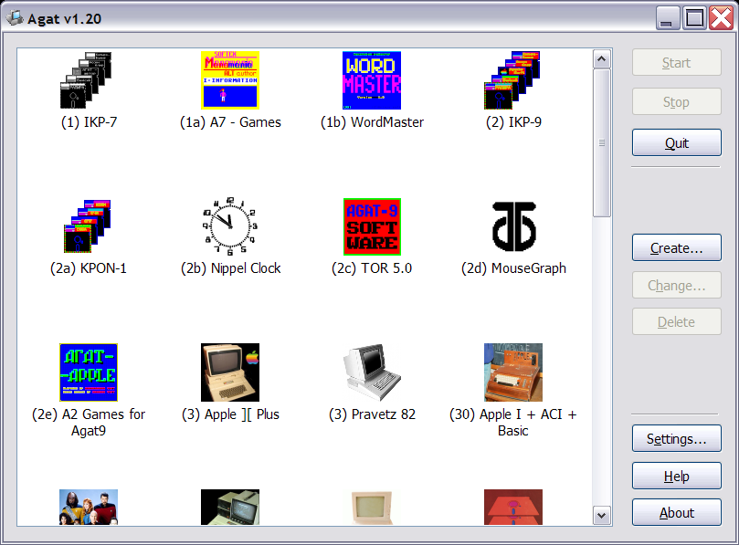

Button |
Action |
|---|---|
| Start | Start selected system |
| Stop | Terminate selected system (inactive if not started) |
| Quit | Quit emulator |
| Create | Create new system configuration |
| Change | Change selected system configuration |
| Delete | Delete selected system(s) |
| Settings | Configure emulator |
| Help | Display help |
| About | Show version information |
See also: Controlling systems, Keyboard shortcuts, Main menu